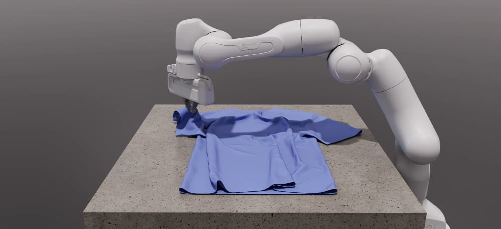

Newton Physics Documentation#

Newton is a GPU-accelerated, extensible, and differentiable physics simulation engine designed for robotics, research, and advanced simulation workflows. Built on top of NVIDIA Warp and integrating MuJoCo Warp, Newton provides high-performance simulation, modern Python APIs, and a flexible architecture for both users and developers.
Key Features#
GPU-accelerated: Leverages NVIDIA Warp for fast, scalable simulation.
Multiple solver implementations: XPBD, VBD, MuJoCo, Featherstone, SemiImplicit.
Modular design: Easily extendable with new solvers and components.
Differentiable: Supports differentiable simulation for machine learning and optimization.
Rich Import/Export: Load models from URDF, MJCF, USD, and more.
Open Source: Maintained by Disney Research, Google DeepMind, and NVIDIA.
Learn More
Start with the introduction tutorial for a hands-on walkthrough. For a deeper conceptual introduction, see the DeepWiki Newton Physics page.
Core Concepts#
---
config:
theme: forest
themeVariables:
lineColor: '#76b900'
---
flowchart LR
subgraph Authoring["Model Authoring"]
direction LR
P[Python API] --> A[ModelBuilder]
subgraph Imported["Imported assets"]
direction TB
U[URDF]
M[MJCF]
S[USD]
end
U --> G[Importer]
M --> G
S --> G
G --> A
end
B[Model]
subgraph Loop["Simulation Loop"]
direction LR
C[State] --> D[Solver]
J[Control] --> D
E[Contacts] --> D
D --> C2[Updated state]
end
subgraph Outputs["Outputs"]
direction TB
K[Sensors]
F[Viewer]
end
A -->|builds| B
B --> C
B --> J
B --> E
C2 --> K
E --> K
C2 --> F
ModelBuilder: The entry point for constructing simulation models from primitives or imported assets.Model: Encapsulates the physical structure, parameters, and configuration of the simulation world, including bodies, joints, shapes, and physical properties.State: Represents the dynamic state at a given time, including positions and velocities that solvers update each step. Optional extended attributes store derived quantities such as rigid-body accelerations for sensors.Contacts: Stores the active contact set produced byModel.collide, with optional extended attributes such as contact forces for sensing and analysis.Control: Encodes control inputs such as joint targets and forces applied during the simulation loop.Solver: Advances the simulation by integrating physics, handling contacts, and enforcing constraints. Newton provides multiple solver backends, including XPBD, VBD, MuJoCo, Featherstone, and SemiImplicit.
Sensors: Compute observations from
State,Contacts, sites, and shapes. Many sensors rely on optional extended attributes that store derived solver outputs.Importer: Loads models from external formats via
add_urdf(),add_mjcf(), andadd_usd().Viewer: Visualizes the simulation in real time or offline.
Simulation Loop#
Build or import a model with
ModelBuilder.Finalize the builder into a
Model.Create any sensors, then allocate one or more
Stateobjects plusControlinputs andContacts.Call
Model.collideto populate the contact set for the current state.Step a solver using the current state, control, and contacts.
Update sensors, inspect outputs, render, or export the results.
Quick Links#
Installation — Setup Newton and run a first example in a couple of minutes
Tutorials — Browse the guide’s tutorial landing page
Introduction tutorial — Walk through a first hands-on tutorial
Frequently Asked Questions (FAQ) — Frequently asked questions
Development — For developers and code contributors
newton — Full API reference